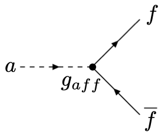

Axions in this course#
Welcome to my lecture sequence on axions. I teach this because I have been involved in searches for axions since 1993 when I first started my Ph.D. in the USA. Any of you who are curious about being a Ph.D. student in the USA, should feel free to ask me about my experience off-line.
Axions are a hypothetical field that has a dual heritage in physics. First, axions were predicted as a consequence of a neat piece of particle physics called the Peccei Quinn mechanism. This mechanism is an attempt to solve some problems with the consistency of our theory of quarks and their interactions, quantum chromodynamics, and the properties of some low energy bound states of quarks such as neutrons and nuclei. The axion mass isn’t known as a consequence of this theory, but there are certain properties of axions, in particular their coupling to electromagnetic waves, that are known, if axions exist.
Second, the axion field could solve the dark matter problem, or be part of its solution, and hence axions have taken on a significance as part of modern theories of astrophysics and cosmology.
We’ll learn about both brances of the heritage of axions in this course. We won’t go in to a great deal of detail, but we will indicate the paths into this detail, so that if you are curious, you can learn more about them later on. We will also spend some time looking at the physics of instruments designed to detect axions.
We’ll also take a tour of my lab where we are building an axion detector in an experiment called QSHS.
Particle physics#
Particle physics is a subject developed to explain observations of the behaviour of subatomic particles, mostly using high energy collisions, initially in cosmic rays, and then subsequently with particle beam accelerators once these had been invented. The idea is that a theory that explains these observations of the fundamental building blocks and their behaviour at high energies should also be able to explain other phenomena measured at lower energies. Ultimately the dream is of one theory, hopefully using a relatively small number of inputs, that can explain all the phenomena that we encounter in science. Sometimes people call these theories of everything. We don’t know whether it is possible to construct such theories. Some scientists see this as their central aspiration. These ideas go back at least as far as the Greek classical thinkers, however they are probably much older, it’s just that the writings of the Greeks have survived into modernity.
Let us consider atoms, We know that all substances are composed of a finite number of chemical elements. This was discovered by studying chemical reactions, learning that all substances could be caused to undergo reactions that decomposed them into a finite number of elements, noticing patterns obeyed by elements having different atomic masses, and organising the different chemical elements into groups. Next it was discovered using numerous experimental methods both in chemistry and in physics labs, that the atoms actually a sophisticated substructure. They were found to be made of electrons bound to a hard dense nucleus whose charge rather curiously exactly balanced the charges on the electrons. Arguably the experiments that marked the transition between chemistry and physics dominating the quest to understand the innards of the atom were Rutherford’s experiments scattering alpha particles off matter, which established that the nucleus was a small dense core to an atom that was mostly otherwise vacuum, occupied only by the electrons. Eventually still higher energy collisions were used to decompose the nucleus into its component protons (noticed first because they are electrically charged) and neutrons (discovered later, and neutral). Interestingly, protons appear to be stable - the lightest isotope of Hydrogen has as its nucleus a single proton. Neutrons, however, when separated from atoms, decay into protons, electrons and a third curious new object, the neutrino.
Still working with particle beam accelerators, it was noticed that when the energies of the particle beams being collided were made sufficiently high, all sorts of new high energy unstable particles were created, a consequence of Einstein’s special relativity and the equivalence of mass and energy, \(E=mc^2\) for a particle at rest. Careful studies of the masses, charges and other properties of these unstable particles were made. In a repeat of the earlier history of chemistry, patterns were noticed and the particles were organised into groups. This again suggested that these unstable particles might be bound states of some more fundamental particles. However, efforts to separate these so-called quarks were initially unsuccessful, and for a while it was thought that they were merely convenient mathematical constructs as opposed to physically meaningful particles. However, eventually, in high energy collisions of protons with electrons, patterns in the scattering angles of the electrons betrayed that the protons, in high energy collisions, behaved as if they had small hard physical consituents. These are the quarks and the gluons. As far as we can tell with the accelerators we can construct there is no further sub-structure inside the quarks and gluons, though it has already been noticed that the quarks so far discovered fall in to three groups: ‘up and down’, ‘charm and strange’, and ‘top and bottom’. The names are of course merely fanciful. Once again, there seems to be a pattern emerging, and in the past pattern has suggested substructure.
The one really stubborn case is the electron, which behaves so far as a perfect point particle, and is devoid of any substructure that we can detect. However, note that there are two heavier counterparts to the electron, the muon and the tau. The electron, muon and tau are collectively called the charged leptons. Their charges are all \(-e\), the same as the electron charge. Again, a pattern is noticed. Rather provocatively, this pattern seems to mirror the pattern that is seen with the quarks. Three families. And, again, this same pattern is seen with neutrinos - there are three types of neutrino, corresponding to the three types of charged lepton. The idea that the three families of neutral leptons (neutrinos), charged leptons (electrons, muons, taus), and quarks ((up,down), (charm,strange), (top,bottom)) might be connected in a more fundamental way gave rise to the theory of supersymmetry, but supersymmetry has yet to be detected in nature, in spite of the beauty of the theory.
Neutrons at high and low energies#
At high energies, the neutron behaves as a bound state of a single ‘up’ quark and two ‘down’ quarks. It has no charge as the charges of the up quark (\(+2e/3\) i.e. minus two thirds of the electron charge) and the two down quarks (\(-e/3\) each i.e. plus one third of the electron charge), where \(-e\) is the charge on the electron, cancel each other out. In addition, at any given time there are also other quark-antiquark pairs and gluon fields present in the neutron. It is quite a complicated, composite object.
You might naively think that at lower energies the neutron would get less complicated, by the following chain of thought. We might be tempted to associate lower energies with lower temperatures. We might associate the temperature with how vigoruously the constituents of the neutron are moving around. After all, temperature is a manifestation of some kind of kinetic energy. At lower energies, then, everything should move less, and with less motion involved, we might hope that the behaviour of the constituent quarks might be easier to understand, because of the smaller amount of random motion.
In fact the opposite is true - the neutron gets more complicated as its energy is lowered. The temperature of a neutron is in fact how fast the neutron itself is moving about, and this isn’t necessarily reflected in how fast the quarks and gluons are moving inside the neutron; these two temperatures can in fact be completely different from each other. If we think of temperature as reflective of the energies of the neutrons in the collisions with other particles being used to try and study them, then how does that affect the complexity of the physics of neutrons? How can the behaviour of the neutrons get harder to study as the energies get lower?
The answer is in quantum mechanics. Quantum mechanics is thought to be the underlying set of rules that govern the properties of microscopic particles and, when the conditions are right, also of larger systems. Quantum mechanics gives us, amongst other things, the tools to study and predict the behaviour of these building blocks that high energy physicists have discovered for us. Or, at least, it sometimes gives us the power to predict some of what will happen in high energy collisions, with two important caveats. First, the predictions of quantum mechanics are almost always merely probabilistic. We can usually only learn the relative probabilities of different outcomes of any given interaction, rather than predicting the outcome with certainty, as is the case in classical physics. Second, there are mysteries - processes that do not seem to be governed by the current quantum mechanics that we have. The so-called ‘strong CP problem’ is an example of a phenomenon which causes trouble in the standard model of particle physics, which is our current best-guess theory of the physics underlying microscopic processes, and hence (we hope) the whole Universe.
Before setting out the strong CP problem in detail, let us take a look at interactions in classical and quantum physics. The idea here is to gain an appreciation of the senses in which classical interactions are similar to quantum interactions, and the senses in which they are different.
Classical interactions#
You have met interactions of many kinds. Classically things interact by exerting forces on each other. When two snooker balls touch, they exert equal and opposite forces on each other because of Newton’s 3rd law of motion, and bounce off each other. We don’t need to know everything about this collision to predict what will happen afterwards, just the momentum and mass of the incoming balls and the impact parameter, which is how close the centres of mass of the two balls would come to each other in the absence of any interaction, although a more sophisticated model would also account for the spin of the balls. We also need to know that certain quantities are conserved as the interaction proceeds. If it is an elastic collision, then kinetic energy, momentum and angular momentum will be conserved. In the interaction illustrated below, the spin component of the interaction has been ignored. This diagram denotes what happens, in an idealistic sense, when a moving snooker ball strikes a stationary one.
Quantum interactions#
As you will learn in quantum mechanics, classical physics is under the surface a very large number of quantum mechanical processes combined. In particle physics we experiment on and investigate those quantum interactions. The hope is that any interaction can ultimately be understood in terms of the bahaviour of the underlying quantum processes. In your degree you will learn how to connect classical and quantum physics through a subject called statistical mechanics.
In quantum mechanics, most problems are not exactly soluble, because the maths is too hard. However, approximate solutions may be found under some circumstances by breaking down the process taking place into simple building blocks. Let us consider two particles interacting. The very most simple thing they can do is ignore each other, like this:

Non interacting models are surprisingly useful; for example, an ideal gas assumes that the particles of the gas don’t interact with each other; similiary the Drude model of conducting electrons in a metal does not account for interactions between the electrons. Both of thees models are extremely successful in developing an understanding of nature, even though they are based on assumptions that ultimately don’t stand up to exact scrutiny.
So, we get interested in modelling the interactions. The simplest building-block of a quantum interaction is a vertex where three or more fields come together at a point. Most primitive interactions are of three fields, though some are of four. Here is a three point interaction between a charged particle like an electron and a photon, a proton is the quantum of the electromagnetic field.
This and all Feynmann graphs are pictorial representations of mathematical expression which in quantum mechanics, which you will study in year 2, is called a probability amplitude. This particular process represents a charged fermion, represented by the solid line with the arrow on, interacting at a single point with a photon, represented by the wiggly line. At the join, called a vertex, is a numerical coefficient, which here is represented by the Greek letter \(\alpha\). The probability that the process represented by this diagram occurs is proportional to the square of this coupling constant, \(\alpha^2\).
Feynmann diagrams can be joined up as long as the legs you are joining are the same. By joining them up you can represent other processes. Here are some ways in which two electrons can interact through electromagnetic interactions, of which the photon is the force carrier:
Each one of these diagrams represents a mathematical term in a sum used to analyse the interaction. This divide and conquer approach to studying interactions is called perturbation theory. You can always do perturbation theory, but it doesn’t always work.
Here is how the method fails. You can imagine that as there are more and more vertices, the mathematical formula corresponding to the interaction gets more complicated, simply because there are more and more different diagrams you can draw, corresponding to ever-more-complicated calculations. However, associated with this mathematical formula is an overall scaling factor called a coupling strength, which is associated with each single vertex in the diagram. In the case of the vertex for an electron emitting or absorbing a photon, that coupling factor is \(\alpha=\frac{1}{137}\). For historical reasons involving the roots of quantum mechanics in atomic physics, this number is called the fine structure constant.
You can now see what is going to happen. As you draw ever more complicated interactions, each time you have a vertex between an electron and a photon, you get another factor of \(\frac{1}{137}\). The more complicated the diagram, the more factors of 137 it is suppressed by in the calculation. So, you usually only need to worry about the simplest diagrams, and you get a good estimate of the overall theory of the interaction. You can then predict, for example, the probability distribution for the shift in wavelength of a photon scattering off a charged particle in a process called Compton scattering.
However, not all theories are this convenient. It turns out that when the interacting quantum particles are quarks, and gluons, the numerical coupling constant at each vertex is much larger than \(\alpha=\frac{1}{137}\). In fact, this number is not only larger, its value is dependent on how much momentum is going to be transferred between the particles during the collision. At very low momentum transfer, the value of the coupling constant, given the symbol \(\alpha_s\), becomes greater than \(1\). When this happens, the more vertices there are involved in a collision process, the more likely it is to occur. This means that you cannot approximate the analysis by just considering the small number of simple processes that only have one or two or three vertices. These diagrams become less significant than those with a hundred, or a thousand, or a million vertices. In other words, you need to consider an infinite number of possibilities and it becomes impossible to do the mathematics. Without these approximation methods, quantum mechanics done this way becomes a useless tool. We need a new approach.
Many-Body Physics#
The new approach is suggested by an analogy that I found in a book by Mattuck on a subject called many body theory. This is an old subject, but it is particularly handy as a way of thinking about theories in which things interact strongly, not feebly. As in, for example, the interactions of quarks and gluons with each other at low energies.
The analogy I really liked in Mattuck’s book is with a rock star trying to cross a busy crowded market square. Everyone knows this famous rock star - she’s been on the TV, she’s an influencer, whatever - all that matters is that she is easily recognised in public. So, this rock star sets out to cross the square - maybe she’s got to get to a meeting or a rehearsal or something like that. However, as soon as she steps in to the square she is recognised by lots of people, who start to come up to her to try and get her to talk with them, or sign autographs, or take selfies with them, or other things like that. Pretty soon, this rock star is surrounded by a large crowd of admirers and souvenir hunters. The rock star isn’t angry, she likes having fans (they pay to come to her gigs), so she does slow down and talk to the ones who are nearest to her, and sign autographs. This inevitably slows her down. However, the fans are not totally disrespectful. They still allow her to move forward through the square, just not as fast as she would had she been a less famous person.
Another observation; new fans see the rock star from afar and try to get to her to get autographs too, but they soon realise that because of the great crowd that has already gathered around her, they are not going to succeed, and they drift away, giving up on meeting their idol.
You may begin to see the analogy. The rock star is like a fundamental particle that is strongly coupled to other particles. As soon as she starts to move, she accretes a big crowd of admirers. However, the rock star and her admirers together can be thought of collectively as a new particle in the square. This particle is heavier and slower moving than the rock star without her entourage, but the strong nature of her interactions and the presence of all these other particles to interact with means that the entourage follows the rock star wherever she goes. If you are interested only in modelling the dynamics of rock-star physics, you might conclude:
It’s hopeless to study the dynamics of rock stars without their crowds - because rock stars always have crowds.
However, it is not hopeless to study (rock stars + crowds). They behave as if they are (a) heavier than the rock star alone; (b) slower moving than the rock star alone; and (c) less strongly coupled than the rock star alone. After all, once there’s a crowd already around this rock star, other people are less strongly attracted to her.
Now, does quantum mechanics have anything to add to all of this? In quantum mechanics, the equivalent of rock stars with crowds of admirers is strongly interacting fundamental particles such as quarks and gluons. They immediately form bound states, crowds of quarks bound together by mutual attraction. However, quantum mechanics places limits on how these strongly bound particles can join together to form a composite object. This limits the number of possible composite objects that can form, and means, critically, that it is certainly possible that many examples of such composite objects that are fundamentally identical to each other may exist.
And - hey presto - we have an idea of how to explain the many layers of structure in the Universe. Whenever we have a microscopic fundamental particle that is strongly interacting it forms a quasi-particle by binding together with other strongly interacting particles. These quasi particles then become the new fundamental entities. Crucially, they are weakly interacting with each other, so that you can again do quantum mechanics by treating the quasi particles as the fundamental objects and doing perturbation theory with them. Only if the interactions between the quaisparticles become sufficiently violent do they succeed in breaking each other up, revealing the existence of the strongly interacting components of which they are composed.
This story has been repeated over and over again - Solid objects are found to be composed of atoms, atoms are split up and found to be composed of electrons and nuclei - nuclei are found to be composed of protons and neutrons, and protons and neutrons (and a great many other heavier unstable species) are found to be composed of quarks and gluons. At each level, the fundamental objects and their interactions can be analysed with quantum mechanics, until eventually somebody figures out how to break these fundamental particles into their consituents, and then the cycle starts over again.
Phase Transitions in Condensed Matter Physics#
As we have already discussed, neutrons are ultimately made up of quarks and gluons. These quarks and gluons were discovered in high energy collisions, high enough that the neutron or proton involved was destroyed in order to reveal its quarks. The question arises, then, can you learn everything about a neutron by understanding the properties of the quarks and gluons that constitute it? Though you might initially answer yes, perhaps another analogy may give you pause for thought.
As you all know from doing endless safe boring school science experiments, salty water exists. In fact, you can also have liquid salt without the water. If you examine salty water, it is rather dull, it is homogeneous - that is, it looks the same no matter in the salty water you are, and isotropic - that is, it looks the same in all directions. These two properties are shared by the Universe at large in standard cosmology. Now, however, we take our salty water and leave it in a warm dry place, and come back a few weeks later, and we see beautiful salt crystals. Between the crystals are spaces and canyons as the crystals don’t form the same way at all points. In some places, the crystalline solid reaches up into the air in towering structures with their surfaces forming smooth flat walls.
A scientist would say that salt crystals are very far from being homogeneous or isotropic.
What do I mean by homogeneous? A crystal consists of a configuration of atoms, sometimes called a basis, that repeats itself in space, with each basis set of atoms bound to the next by balancing electrostatic forces of attraction and repulsion. For example, salt consists of a repeating alternating array of sodium and chorine ions. If you jump from a position in one of the sodium ions to another sodium ion, the crystal and its physics looks the same before and after your jump. If physics remains the same under some operation, such as this translation, then that operation is called a symmetry of the system. So, a crystal is a set of atoms with at least one translation symmetry. Usually there are many more than one, as you will learn next year in condensed matter physics. A crystal is not homogeneous, because between the sodium ions, things are different; for example, there are the chorine ions, which are not the same as the sodium ions. Only if a system is symmetric under any translation, so that it looks the same from all points in space, is it called homogeneous. So, crystals are inhomogeneous; they are not homogeneous.
What about isotropic? If something is isotropic, it means it is the same in all directions. Again, a crystal is far from being isotropic. Starting on a sodium ion, if you move in some directions the first other ion you encounter is a chlorine ion, but if you move in other directions, then you first encounter another sodium ion. Therefore salt crystals are not isotropic. They are not the same in all directions. Instead, salt crystals possess some specific rotational symmetries. If you position the origin at one of the sodium ions, and it doesn’t matter which one, then rotate the entire crystal about this point, then certain rotation angles and directions result in the salt crystal looking the same after the rotation as it did before. In this case, we say the crystal possesses a rotational symmetry. Only if any rotation at all leaves the system looking the same is it isotropic, and in a crystal there are only a discrete set of rotations that will leave it looking the same, so crystals are anisotropic; they are not isotropic.
Is it possible that the changes that occur as the Universe expands and cools could resemble the changes in a material as it undergoes phase transitions? The particle physics equivalent of a phase translation is called, and this isn’t a particularly helpful name in some ways, spontaneous symmetry breaking. Think of spontaneous symmetry breaking as affecting particle physics in the same kind of way as a phase translation affects salt. Before the phase transition, the salty water is homogeneous (the same at all points) and isotropic (the same in all directions). After the phase transition, the salt possesses specific rotational and translational symmetries, but it isn’t symmetric under any arbitrary rotation or translation.
Phase Transitions in Cosmology#
In the early Universe, just after the big bang, all the particles had very high energies. At these high energies, the quarks were not bound to gluons or to each other, everything was free. It’s a bit like our influencer, if she had decided to cross the square running very fast. She might then not have attracted the cloud of admirers, and been able to behave more freely, like a free particle. However, as the Universe expands, the quarks and gluons in it start to lose energy. In a very loose analogy, as the influencer sprints across the square, she starts to tire and slow down, and the admirers start to try and get her autograph again. At lower energies, the quarks and gluons start to stick together and form nuclei. This process is called nucleosynthesis. Nucleosynthesis is sometimes called the QCD phase transition, because it is indeed a phase transition. It happens when particle energies have dropped to around 130MeV (one eV is \(\rm 1.6\times10^{-19}\,J\)), which is about the energy of a \(\pi\) meson at rest, but more about that later.
Before the QCD phase transition, the Universe consisted of a plasma of free quarks and gluons. After the QCD phase transition, the Universe contains nuclei, which are bound up balls of quarks and gluons, with a space, called the QCD vacuum, in between these nuclei. The residual forces between the nuclei are now much weaker than the strong QCD forces binding the quarks and gluons into the nuclei because the QCD ‘colour charges’ of these entities cancel each other out. This effect is called charge shielding, and it also occurs in atomic physics, as you will learn in atomic physics in year 2. If you do probe nuclei at relatively low energies using bombardment with \(\alpha\) particles or some other such method, you discover that they behave as if they bound states, not of quarks and gluons, but of neutrons and protons. Each neutron or proton is itself a bound state of quarks (\(uud\) for the proton and \(udd\) for the neutron), but this is not apparent in these low energy scattering experiments. The protons and neutrons behave as if they are themselves fundamental particles. As for how they are bound together, the particle that appears to play the role of binding them is called the \(\pi\)-meson, and is a bound state of a quark and an antiquark. Outside the nucleus \(\pi\)-mesons are unstable and decay quite quickly into electrons and neutrinos if they are charged \(\pi\)-mesons and into photons if they are neutral \(\pi^0\) mesons. The neutral \(\pi^0\) meson turns out to have a special relationship with the axion. More about that later. Inside the nucleus, \(\pi\) mesons are constantly being created and annihilated. They are pseudo-particles that play the role of binding the protons and neutrons together.
So, phase transitions play the following role in the history of the Universe - they separate energy scales at which different entities behaved like almost free, almost non-interacting particles. For example, at the time when the average particle energy was about 100 mega electron volts (MeV), nucleons formed out of quarks and gluons. At higher energies, the Universe was a plasma of quarks and gluons; at lower energies we had protons and neutrons. In turn, protons and neutrons form into the nuclei that form the cores of atoms, although the phase transition that allows the formation of nuclei heavier than Lithium require conditions only present in the cores of stars, and in the case of nuclei heavier than iron, the collisions of two neutron stars.
The Strong CP problem#
In our current Universe, we certainly have plenty of neutrons and protons, formed at the time of the QCD phase transition in the early Universe, a few seconds after the big bang. Ultimately the neutron is a bound state of quarks and gluons. Therefore if we use the high energy theory of quantum chromodynamics, we should be able to make some predictions about the properties of the neutron. Then we can make measurements of those same quantities and see if they agree with the prediction we have made.
The particular quantity that turns out to be interesting is the neutron electric dipole moment. An electric dipole moment happens when the charge in an object can be separated into two pieces, one positively charged and the other negatively charged. For example, we could place an electron and a proton some distance from each other, and that configuration would have an electric dipole moment equal to the magnitude of the charge on the proton or electron (they are of course the same) multiplied by the distance between them.
Quantum chromodynamics predicts that the electric dipole moment of the neutron should be non-zero. This electric dipole moment originates in the charges of the quarks supposedly ‘inside’ the neutron. You can get a rough idea of how big this electric dipole moment should be by measuring the size of the neutron, which is about \(\rm 10^{-15}\,m\), or one ‘Fermi’ (a unit named after the famous nuclear physicist), and noting that the objects, quarks, that the neutron is supposedly made from, have charges of order the charge on an electron. Therefore one would expect an electric dipole moment of roughly the size of the neutron times the charges on its consituents, which is \(\rm 10^{-15}e-m\), or as it is more commonly written \(\rm 10^{-13}\,e-cm\). This is of course just a rough estimate, but it is a reasonable one. Maybe you’d expect something in reality that was a factor of \(100\) smaller.
However, when the neutron electric dipole moment is measured, the result has always so far been zero. In fact, current upper limits are at the level of \(\rm 10^{-26}\,e-cm\), which is thirteen orders of magnitude smaller than the naive estimate based on assuming our neutron is ‘just’ a sack of quarks and gluons. This is called the strong CP problem.
The Peccei Quinn symmetry and the axion#
The strong CP problem can be understood in the context of phase transitions. Essentially, the properties of low energy neutrons are not wholly predicted by the high energy theory of quantum chromodynamics, any more than the properties of salt crystals are wholly predicted from the fluid dynamics of salty water. Robert Peccei and Helen Quinn proposed that a phase transition called the Peccei Quinn phase transition after them, occurrs at high energies and alters the properties of strongly interacting matter at energies below which the phase transition has occurred. The low energy phase consists of particles with zero electric dipole moment, but the higher energy states that formed the fundamental particles before the phase transition have non-zero electric dipole moment. The physical properties of the funamental states before and after the phase transition are different. This is a central difficulty of high energy physics; phenomena can exist at high energies that you cannot infer from just doing physics at lower energies, and theories that explain high energy phenomena may fail to predict what happens at low energies, if phase transitions occur in the interim.
There is, however, another piece to this puzzle. Phase transitions in particle physics lead to the creation of new particles after the phase transition has occurred. This was proved by Geoffrey Goldstone, and the particles that are produced are collectively referred to to as Goldstone bosons in his honour. One example of a Goldstone boson is the Higgs. Higgs bosons are produced following the electroweak phase transition that occurs at an average particle energy of about \(\rm 90\,GeV\), the energy of a \(Z^0\) boson at rest.
The axion is the Goldstone boson of the Peccei Quinn symmetry. So, the idea is that at some energy scale the strong interactions underwent a phase transition, and after it was over there were lots of these particles called axions. You may wonder why particles are produced in phase transitions. Loosely speaking, the existence of a new particle in the ‘condensed phase’ of a particle system or theory corresponds to the appearance of a new discrete symmetry in the crystallisation of a solid from a liquid melt. However, the theory of phase transitions in particle physics is complex and we won’t go into the details here.
Is Peccei and Quinn’s idea real? Did the Peccei Quinn phase transition really happen? If it did, what energy scale did it occur at? And, what is the axion mass, if the axion exists at all? The answer to all these questions is that we don’t know, but fortunately they are all connected. If we were to discover the axion, and measure its mass, we would also be able to infer the energy scale at the phase transition occurred and the axions came in to existence.
Properties of the Axion#
It turns out that all the properties of axions can be derived from knowing the energy scale at which the Peccei Quinn phase transition occurred. This energy scale is given the symbol \(\rm f_{PQ}\). Because after the big bang the Universe expanded, the energies of particles caught up in the expansion fall. You might wonder why this is so - it comes about because of Einstein’s theory of general relativity which you may learn (from me) in year 4. So, as the Universe expands the energy associated with its constituent particles drops, and as this happens the particle constituents of the Universe undergo a series of phase transitions. The higher the energy scale \(\rm f_{PQ}\), the earlier the Peccei Quinn phase transition occurred.
When the Peccei Quinn phase transition occurs, axions are produced. The axion mass can also be calculated from \(\rm f_{PQ}\). The relationship is an inverse one, $\(\frac{f_{PQ}}{m_a}=\frac{f_{QCD}}{m_\pi}.\)$
The interactions of axions are based on a coupling between axions and spin-\(\frac{1}{2}\) fermions, such as electrons, or, in some variants of axion theory, quarks. The basic coupling to fermions is embodied in this Feynmann diagram.

This diagram means the following, an axion field represented by the dashed line couples to a fermion field, at a point in space-time. The fermion fields are represented by solid lines with arrows on. The coefficient \(g_{aff}\) is called the coupling constant between the axion and the fermion. The diagram can be interpreted different ways depending on how it is oriented with respect to the time axis. If the axion comes in in the direction of increasing time, the diagram represents the decay of an axion into a fermion and an antifermion. Antiparticles are represented by lines that have arrows whose component parallel to the time axis points backwards. The square of the coupling constant is proportional to the probability per unit time that the decay will occur. Feynmann diagrams are equivalent to mathematical terms in an expression for the probability amplitude for the process to occur. You will learn more about probability amplitudes in the core course on quantum mechanics in year 2.
The axion to fermion coupling along with the couplings of charged fermions to photons can be used to build up the other important interaction of axions, which is represented by this higher order Feynmann diagram. It’s higher order because it has more than one vertex.
This diagram is essentially the same as the diagram for the process by which a neutral \(\pi^0\) meson decays into two photons (the quantua of the electromagnetic field).
These diagrams with the triangular internal structure are sometimes called anomoly diagrams, or just anomalies. This name comes about because it may be that processes that cannot occur via a diagram with only one vertex, are seen in nature because they proceed by a higher order process. The axion coupling to two photons is sometimes appreviated by shrinking the complexity in the above diagram to a point and representing the interaction as point-like.